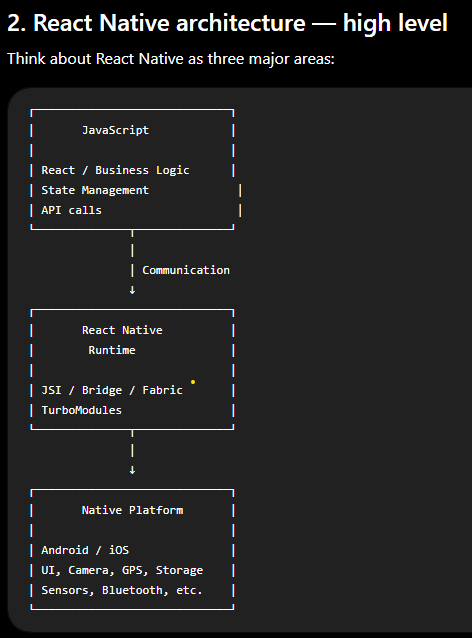

RN Architecture
React Native allows us to build native mobile applications using JavaScript/TypeScript and React. The JavaScript code runs in a JavaScript engine, and React Native connects that JavaScript code to native Android/iOS functionality. Instead of rendering HTML elements like React for the web, React Native renders native UI components.
{kind=link}

Old React Native Architecture
The old architecture was primarily based on the:
Bridge
The Bridge allowed communication between:
JavaScript
↕
Bridge
↕
NativeFor example:
JS
|
| "Call camera"
↓
Bridge
|
↓
Native Camera APIThe Bridge used asynchronous, serialized communication.
Data often had to be converted into JSON-like structures before crossing the boundary.
Why was the Bridge a problem?
Imagine you have:
NativeModule.doSomething({
userId:123,
name:"John"
});The data has to travel between JS and native.
Conceptually:
JavaScript
↓
Serialize data
↓
Bridge
↓
Deserialize data
↓
Native APIIf this happens thousands of times, it can become expensive.
This becomes particularly noticeable with:
- animations
- gestures
- large lists
- high-frequency events
- complex native modules
- large amounts of data crossing JS/native boundary
So the Bridge became one of the major architectural limitations.
React Native New Architecture
The New Architecture was introduced to address these limitations.
The major technologies you should remember are:
New Architecture
│
├── JSI
├── Fabric
├── TurboModules
└── CodegenRemember this for your interview:
JSI is the foundation, Fabric is the new rendering system, TurboModules are the new native module system, and Codegen provides type-safe native interfaces.
JSI — JavaScript Interface
It allows JavaScript to interact more directly with C++/native code.
JS
↓
JSI
↓
C++ / NativeThis reduces the overhead associated with serialization and asynchronous bridge communication.
JSI is an interface that allows JavaScript to interact directly with C++ and native functionality without relying on the old asynchronous Bridge model.
Fabric
Fabric is the new rendering system in React Native.
Old rendering architecture:
React
↓
Shadow Tree
↓
Bridge
↓
Native UINew architecture:
React
↓
Fabric
↓
Native UIFabric is responsible for coordinating React's rendering with native UI.
It provides improvements around:
- rendering
- responsiveness
- concurrent React features
- synchronous capabilities where appropriate
- better interoperability with native components
TurboModules
TurboModules replace the older Native Modules architecture.
Suppose you need:
GPS
Camera
Bluetooth
Secure Storage
File SystemThese are native capabilities.
Previously:
JavaScript
↓
Bridge
↓
Native ModuleWith TurboModules:
JavaScript
↓
JSI
↓
TurboModule
↓
Native API
One major advantage is lazy loading. Instead of loading every native module when the application starts, ( App starts ⇒ Load 100 native modules), TurboModules can load modules when they're actually needed. That can improve startup performance and memory usage.
Codegen
Codegen is another important part.
Imagine JavaScript/TypeScript defines an interface:
interfaceNativeStorage {
getItem(key:string):Promise<string>;
setItem(key:string,value:string):Promise<void>;
}Codegen can generate the required native interfaces/types.
So:
TypeScript specification
↓
Codegen
↓
Native interfacesThis provides more:
- type safety
- consistency
- predictable JS ↔ Native communication

Why can React Native apps become slow?
Performance problems can happen when too much work is performed on the JavaScript thread, when there are excessive JS-to-native interactions, unnecessary re-renders, large lists rendered inefficiently, expensive calculations, or poorly optimized images.
How do you optimize React Native?
You should know these for interviews:
React optimization
React.memo
useMemo
useCallback
- avoid unnecessary state
- avoid unnecessary re-renders
Lists
Use:
FlatListinstead of:
ScrollViewfor large datasets.
Optimize:
keyExtractor
getItemLayout
initialNumToRender
maxToRenderPerBatch
windowSize
Images
Use:
- appropriate image sizes
- caching
- compressed assets
- optimized image libraries when necessary
One-minute interview answer
"React Native allows us to build native Android and iOS applications using React and JavaScript or TypeScript. Our React code runs in a JavaScript runtime, while the actual UI and platform-specific functionality are handled by native Android and iOS code.
Historically, React Native used a Bridge for communication between JavaScript and native code. The Bridge serialized messages and communicated asynchronously, which could become a bottleneck for high-frequency communication.
The New Architecture addresses this with JSI, Fabric, TurboModules and Codegen. JSI provides a more direct interface between JavaScript and native or C++ code. Fabric is the new rendering system, while TurboModules are the newer native module system and support things such as lazy loading. Codegen generates type-safe native interfaces from specifications.
So, at a high level, React handles the application and component logic, JSI provides the JavaScript-to-native interface, Fabric handles rendering, TurboModules provide native functionality, and Android or iOS ultimately renders and executes the native functionality."
One thing to memorize